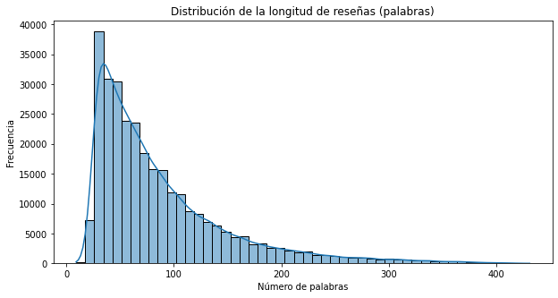
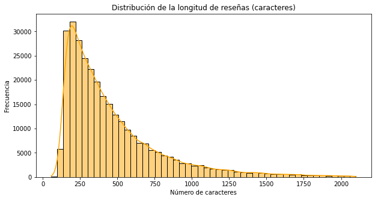
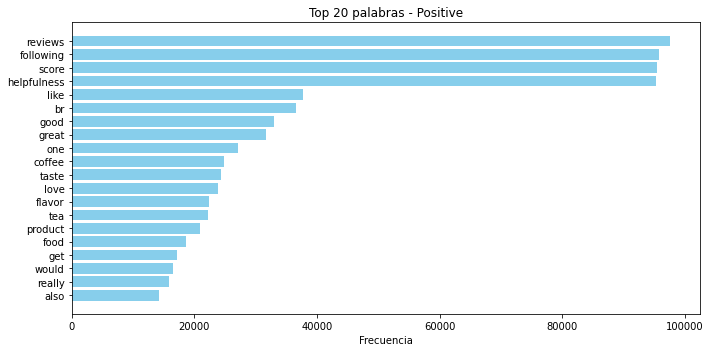
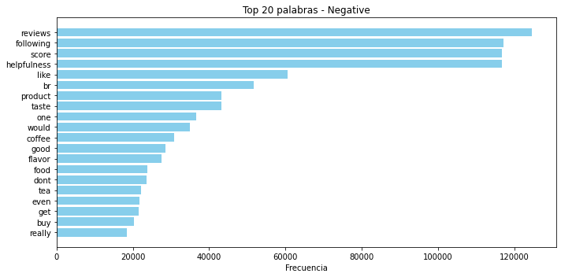
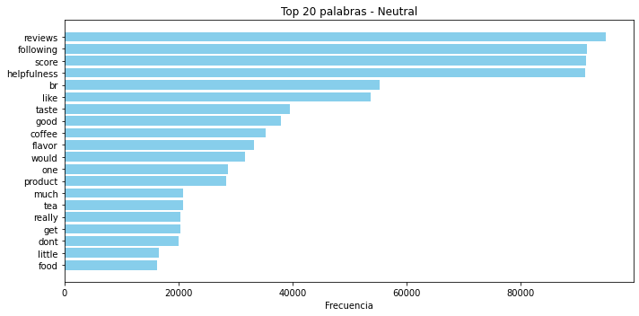
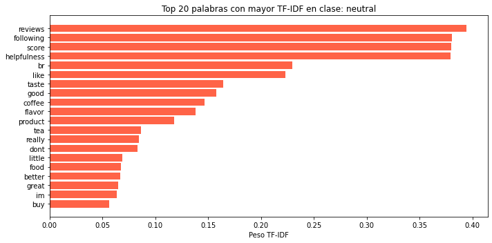
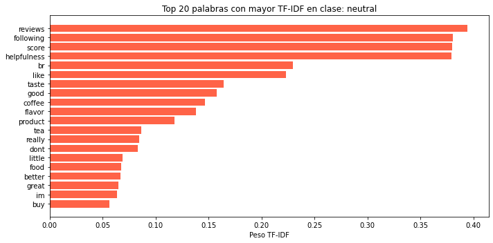

Maestría en Analítica de Datos#
Proyecto Final Machine Learning 2025-10#
ETL y EDA#
# Importar librerías necesarias
from datasets import load_dataset
import pandas as pd
# Cargar el dataset desde Huggin Face
dataset = load_dataset("akshatmehta98/amazon_reviews")
# Mostrando estructura del dataset
dataset
DatasetDict({
train: Dataset({
features: ['HelpfulnessNumerator', 'HelpfulnessDenominator', 'Summary', 'text', 'labels', 'sentiment_code', 'input_ids', 'attention_mask'],
num_rows: 303316
})
test: Dataset({
features: ['HelpfulnessNumerator', 'HelpfulnessDenominator', 'Summary', 'text', 'labels', 'sentiment_code', 'input_ids', 'attention_mask'],
num_rows: 116661
})
})
# Convertimos a DataFrame para visualizar mejor
df_train = dataset['train'].to_pandas()
df_test = dataset['test'].to_pandas()
# Veamos las primeras filas del train
df_train.head(10)
| HelpfulnessNumerator | HelpfulnessDenominator | Summary | text | labels | sentiment_code | input_ids | attention_mask | |
|---|---|---|---|---|---|---|---|---|
| 0 | 0 | 0 | Great find! | these candies are very hard to find in the sin... | positive | 2 | [ 0 6097 831 34204 621 4552 7... | [1 1 1 1 1 1 1 1 1 1 1 1 1 1 1 1 1 1 1 1 1 1 1... |
| 1 | 0 | 0 | very tasty - and healthy | im on the healthy nutrition and fitness kick t... | positive | 2 | [ 0 566 98 70 87349 150017 ... | [1 1 1 1 1 1 1 1 1 1 1 1 1 1 1 1 1 1 1 1 1 1 1... |
| 2 | 0 | 0 | I liked the old man design better :) | i dont normally add content to amazon because ... | positive | 2 | [ 0 17 13319 3638 538 15190 10... | [1 1 1 1 1 1 1 1 1 1 1 1 1 1 1 1 1 1 1 1 1 1 1... |
| 3 | 0 | 0 | Good gluten free cookie! | good tasting cookie will satisfy your sweet to... | positive | 2 | [ 0 4127 3251 1916 9332 1221 40407 ... | [1 1 1 1 1 1 1 1 1 1 1 1 1 1 1 1 1 1 1 1 1 1 1... |
| 4 | 88 | 95 | Organic but BPA in the lid! | our baby really loves to eat these and they co... | negative | 0 | [ 0 2446 15546 6183 5161 7 ... | [1 1 1 1 1 1 1 1 1 1 1 1 1 1 1 1 1 1 1 1 1 1 1... |
| 5 | 0 | 0 | a must for gin and tonic | i once tried q tonic for my gin and tonic now ... | positive | 2 | [ 0 17 24145 37842 8096 47 6... | [1 1 1 1 1 1 1 1 1 1 1 1 1 1 1 1 1 1 1 1 1 1 1... |
| 6 | 1 | 2 | Delicious! | glad i ordered these they are really yummy i g... | positive | 2 | [ 0 9525 17 12989 297 6097 1... | [1 1 1 1 1 1 1 1 1 1 1 1 1 1 1 1 1 1 1 1 1 1 1... |
| 7 | 0 | 0 | Great tasting tea at best price | my family is big on tea drinking and cant sett... | positive | 2 | [ 0 759 14449 83 6957 98 26... | [1 1 1 1 1 1 1 1 1 1 1 1 1 1 1 1 1 1 1 1 1 1 1... |
| 8 | 6 | 9 | Tasted bad. Tossed most in the trash | i lived in the islands for 5 years and i know ... | negative | 0 | [ 0 17 158930 23 70 90695 ... | [1 1 1 1 1 1 1 1 1 1 1 1 1 1 1 1 1 1 1 1 1 1 1... |
| 9 | 0 | 0 | Awesome service and great products | we sent this product as a gift to my husbands ... | positive | 2 | [ 0 642 9325 903 12996 237 ... | [1 1 1 1 1 1 1 1 1 1 1 1 1 1 1 1 1 1 1 1 1 1 1... |
#Revisión general del train
df_train.info()
<class 'pandas.core.frame.DataFrame'>
RangeIndex: 303316 entries, 0 to 303315
Data columns (total 8 columns):
# Column Non-Null Count Dtype
--- ------ -------------- -----
0 HelpfulnessNumerator 303316 non-null int64
1 HelpfulnessDenominator 303316 non-null int64
2 Summary 303316 non-null object
3 text 303316 non-null object
4 labels 303316 non-null object
5 sentiment_code 303316 non-null int64
6 input_ids 303316 non-null object
7 attention_mask 303316 non-null object
dtypes: int64(3), object(5)
memory usage: 18.5+ MB
df_train.describe()
| HelpfulnessNumerator | HelpfulnessDenominator | sentiment_code | |
|---|---|---|---|
| count | 303316.000000 | 303316.000000 | 303316.000000 |
| mean | 1.844644 | 2.815661 | 0.929773 |
| std | 6.636582 | 7.804405 | 0.833000 |
| min | 0.000000 | 0.000000 | 0.000000 |
| 25% | 0.000000 | 0.000000 | 0.000000 |
| 50% | 0.000000 | 1.000000 | 1.000000 |
| 75% | 2.000000 | 3.000000 | 2.000000 |
| max | 844.000000 | 923.000000 | 2.000000 |
# Distribución de la variable Objetivo en el train
df_train["labels"].value_counts(normalize=True)
negative 0.384523
positive 0.314296
neutral 0.301181
Name: labels, dtype: float64
# Calculemos la longitud de las reseñas en PALABRAS
df_train["length_words"] = df_train["text"].apply(lambda x: len(str(x).split()))
# Calculemos la longitud de las reseñas en CARACTERES
df_train["length_chars"] = df_train["text"].apply(lambda x: len(str(x)))
# Librerías necesarias
import matplotlib.pyplot as plt
import seaborn as sns
# Histograma de longitud en palabras
plt.figure(figsize=(10,5))
sns.histplot(df_train['length_words'], bins=50, kde=True)
plt.title('Distribución de la longitud de reseñas (palabras)')
plt.xlabel('Número de palabras')
plt.ylabel('Frecuencia')
plt.show()
# Histograma de longitud en caracteres
plt.figure(figsize=(10,5))
sns.histplot(df_train['length_chars'], bins=50, kde=True, color='orange')
plt.title('Distribución de la longitud de reseñas (caracteres)')
plt.xlabel('Número de caracteres')
plt.ylabel('Frecuencia')
plt.show()


# Relacionamos longitud con el sentimiento
sns.boxplot(data=df_train, x='labels', y='length_words')
plt.title('Longitud de reseñas por tipo de sentimiento (en palabras)')
plt.xlabel('Sentimiento')
plt.ylabel('N° de palabras')
plt.show()

# Distribución de las variables HelpfulnessNumerator y HelpfulnessDenominator
# HelpfulnessNumerator
plt.figure(figsize=(10,5))
sns.histplot(df_train['HelpfulnessNumerator'], bins=50, kde=True)
plt.title('Distribución de HelpfulnessNumerator')
plt.xlabel('Número de personas que encontraron útil la reseña')
plt.ylabel('Frecuencia')
plt.show()
# HelpfulnessDenominator
plt.figure(figsize=(10,5))
sns.histplot(df_train['HelpfulnessDenominator'], bins=50, kde=True, color='orange')
plt.title('Distribución de HelpfulnessDenominator')
plt.xlabel('Número total de votos de utilidad')
plt.ylabel('Frecuencia')
plt.show()


# Agregamos una columna de ratio de utilidad
# Esto normaliza un poco el análisis
df_train['helpfulness_ratio'] = df_train['HelpfulnessNumerator'] / (df_train['HelpfulnessDenominator'] + 1)
#Visualizamos la distribución del ratio de utilidad
plt.figure(figsize=(10,5))
sns.histplot(df_train['helpfulness_ratio'], bins=50, kde=True, color='green')
plt.title('Distribución del Ratio de Helpfulness')
plt.xlabel('Ratio de utilidad')
plt.ylabel('Frecuencia')
plt.show()

# Veamos una posible relación entre longitud y utilidad
plt.figure(figsize=(10,5))
sns.scatterplot(data=df_train, x='length_words', y='helpfulness_ratio', alpha=0.3)
plt.title('Longitud vs. Ratio de Helpfulness')
plt.xlabel('N° de palabras')
plt.ylabel('Ratio de utilidad')
plt.show()

# Vamos a limpiar el texto para una visualización a través de WordCloud
# Para empezar, importaremos las librerías necesarias
import nltk
import re
import string
# Descargar stopwords solo una vez
nltk.download('stopwords')
from nltk.corpus import stopwords
stop_words = set(stopwords.words('english'))
[nltk_data] Downloading package stopwords to
[nltk_data] /Users/gustavo/nltk_data...
[nltk_data] Package stopwords is already up-to-date!
# Realizaremos una función para limpiar el texto
def limpiar_texto(texto):
# Pasar a minúsculas
texto = texto.lower()
# Eliminar números
texto = re.sub(r'\d+', '', texto)
# Eliminar puntuación
texto = texto.translate(str.maketrans('', '', string.punctuation))
# Eliminar stopwords
texto = " ".join([word for word in texto.split() if word not in stop_words])
return texto
# Creamos una nueva columna en el DataFrame con el texto limpio (Solo para visualización)
df_train['clean_text'] = df_train['text'].apply(limpiar_texto)
# Con el texto limpio, procedemos a crear una nube de palabras con wordcloud, por sentimiento
from collections import Counter
import matplotlib.pyplot as plt
def top_palabras_por_clase(df, clase, n=20):
subset = df[df['labels'] == clase]
texto = " ".join(subset['clean_text'].dropna())
palabras = texto.split()
top = Counter(palabras).most_common(n)
palabras, freqs = zip(*top)
plt.figure(figsize=(10, 5))
plt.barh(palabras[::-1], freqs[::-1], color='skyblue')
plt.title(f'Top {n} palabras - {clase.capitalize()}')
plt.xlabel("Frecuencia")
plt.tight_layout()
plt.show()
for clase in ['positive', 'negative', 'neutral']:
top_palabras_por_clase(df_train, clase)



# Vamos a calcular TF-IDF para visualizar la importancia de las palabras por clase
#libreria necesaria
from sklearn.feature_extraction.text import TfidfVectorizer
# Agrupar el texto por clase
textos_por_clase = df_train.groupby("labels")["clean_text"].apply(lambda x: " ".join(x.dropna()))
# Creamos el vectorizador TF-IDF
vectorizer = TfidfVectorizer(stop_words='english', max_features=5000)
# Aplicamos a los textos agrupados por clase
tfidf_matrix = vectorizer.fit_transform(textos_por_clase)
# Obtenemos nombres de las palabras
palabras = vectorizer.get_feature_names_out()
# Creamos un DataFrame TF-IDF con clases como índice y palabras como columnas
df_tfidf = pd.DataFrame(tfidf_matrix.toarray(), index=textos_por_clase.index, columns=palabras)
# Creamos una función para visualizar el top de palabras por clase
def mostrar_top_tfidf(clase, top_n=20):
serie = df_tfidf.loc[clase].sort_values(ascending=False)[:top_n]
plt.figure(figsize=(10,5))
plt.barh(serie.index[::-1], serie.values[::-1], color='tomato')
plt.title(f'Top {top_n} palabras con mayor TF-IDF en clase: {clase}')
plt.xlabel('Peso TF-IDF')
plt.tight_layout()
plt.show()
# Mostramos el top de palabras por clase
for clase in ['positive', 'negative', 'neutral']:
mostrar_top_tfidf(clase)

 

# Distribución de la variable Objetivo en el test
df_test["labels"].value_counts(normalize=True)
negative 0.386659
positive 0.314115
neutral 0.299226
Name: labels, dtype: float64
# Sacamos los datos de validación de los datos de ntrenamiento
from sklearn.model_selection import train_test_split
# Dividir df_train en train y valid (80/20)
df_train_split, df_valid = train_test_split(df_train, test_size=0.2, random_state=42, stratify=df_train['sentiment_code'])
print("Train split:", df_train_split.shape)
print("Valid split:", df_valid.shape)
Train split: (242652, 12)
Valid split: (60664, 12)
Tokenización y Embeddings#
# Verificamos que el equipo (MAC) este usando la GPU
import torch
device = 'mps' if torch.backends.mps.is_available() else 'cpu'
print(f"Dispositivo seleccionado: {device}")
Dispositivo seleccionado: mps
import os
os.environ["USE_TF"] = "0"
# Usaremos un modelo preentrenado basado en transformers para generar los embeddings
from sentence_transformers import SentenceTransformer
model = SentenceTransformer('all-mpnet-base-v2',device=device)
# Generar embeddings
X_train = model.encode(df_train_split['text'].tolist(), show_progress_bar=True)
X_valid = model.encode(df_valid['text'].tolist(), show_progress_bar=True)
X_test = model.encode(df_test['text'].tolist(), show_progress_bar=True)
# Etiquetas
y_train = df_train_split['sentiment_code'].values
y_valid = df_valid['sentiment_code'].values
y_test = df_test['sentiment_code'].values
# Confirmar formas
print("X_train:", X_train.shape)
print("X_valid:", X_valid.shape)
print("X_test: ", X_test.shape)
---------------------------------------------------------------------------
KeyboardInterrupt Traceback (most recent call last)
/var/folders/6f/tr98z70j73n1m4xh0tbwvs4h0000gn/T/ipykernel_3420/2285988582.py in <module>
1 # Generar embeddings
----> 2 X_train = model.encode(df_train_split['text'].tolist(), show_progress_bar=True)
3 X_valid = model.encode(df_valid['text'].tolist(), show_progress_bar=True)
4 X_test = model.encode(df_test['text'].tolist(), show_progress_bar=True)
5
/opt/miniconda3/envs/ml_venv/lib/python3.9/site-packages/sentence_transformers/SentenceTransformer.py in encode(self, sentences, prompt_name, prompt, batch_size, show_progress_bar, output_value, precision, convert_to_numpy, convert_to_tensor, device, normalize_embeddings, **kwargs)
584 # fixes for #522 and #487 to avoid oom problems on gpu with large datasets
585 if convert_to_numpy:
--> 586 embeddings = embeddings.cpu()
587
588 all_embeddings.extend(embeddings)
KeyboardInterrupt:
# Guardamos los embeddings y etiquetas en archivos .npy
import numpy as np
# Guardar embeddings
np.save("X_train_embeddings.npy", X_train)
np.save("X_valid_embeddings.npy", X_valid)
np.save("X_test_embeddings.npy", X_test)
# Guardar etiquetas
np.save("y_train.npy", y_train)
np.save("y_valid.npy", y_valid)
np.save("y_test.npy", y_test)
print("Archivos guardados correctamente.")
# Para cargar los embeddings y etiquetas en otro script, usar:
import numpy as np
X_train = np.load("X_train_embeddings.npy")
X_valid = np.load("X_valid_embeddings.npy")
X_test = np.load("X_test_embeddings.npy")
y_train = np.load("y_train.npy")
y_valid = np.load("y_valid.npy")
y_test = np.load("y_test.npy")
Modelos Benchmark#
Perceptrón Multicapa (MLP)#
# Librerias necesarias
import numpy as np
from tensorflow.keras.models import Sequential # type: ignore
from tensorflow.keras.layers import Dense, Dropout # type: ignore
from tensorflow.keras.optimizers import Adam # type: ignore
from scikeras.wrappers import KerasClassifier
from sklearn.model_selection import GridSearchCV
from sklearn.metrics import classification_report, confusion_matrix, roc_auc_score, accuracy_score, precision_score, recall_score, f1_score
# Definimos función generadora del modelo
def create_model(neurons=128, dropout_rate=0.3, learning_rate=0.001):
model = Sequential()
model.add(Dense(neurons, activation='relu', input_shape=(768,)))
model.add(Dropout(dropout_rate))
model.add(Dense(neurons//2, activation='relu'))
model.add(Dropout(dropout_rate))
model.add(Dense(3, activation='softmax')) # 3 clases
model.compile(optimizer=Adam(learning_rate=learning_rate),
loss='sparse_categorical_crossentropy',
metrics=['accuracy'])
return model
# KerasClassifier wrapper
model = KerasClassifier(
model=create_model,
epochs=10,
batch_size=64,
verbose=0
)
# Grid de hiperparámetros
param_grid = {
'model__neurons': [128, 256],
'model__dropout_rate': [0.3, 0.4],
'model__learning_rate': [0.001, 0.0005],
'batch_size': [64],
'epochs': [10]
}
# GridSearchCV
grid = GridSearchCV(estimator=model, param_grid=param_grid, cv=3, verbose=2)
# Ajustar el modelo
grid_result = grid.fit(X_train, y_train)
# Resultados
print("Mejor score (accuracy): {:.4f}".format(grid_result.best_score_))
print("Mejores hiperparámetros:", grid_result.best_params_)
# Guardando el mejor modelo
# Obtener el mejor modelo ya entrenado
best_model_MLP = grid_result.best_estimator_.model_
# Guardar el modelo
best_model_MLP.save("best_model_MLP.h5")
# Para cargar el modelo
from tensorflow.keras.models import load_model # type: ignore
best_model_MLP= load_model("best_model_MLP.h5")
2025-04-03 12:28:16.365244: I metal_plugin/src/device/metal_device.cc:1154] Metal device set to: Apple M4 Pro
2025-04-03 12:28:16.365300: I metal_plugin/src/device/metal_device.cc:296] systemMemory: 24.00 GB
2025-04-03 12:28:16.365307: I metal_plugin/src/device/metal_device.cc:313] maxCacheSize: 8.00 GB
2025-04-03 12:28:16.365331: I tensorflow/core/common_runtime/pluggable_device/pluggable_device_factory.cc:305] Could not identify NUMA node of platform GPU ID 0, defaulting to 0. Your kernel may not have been built with NUMA support.
2025-04-03 12:28:16.365346: I tensorflow/core/common_runtime/pluggable_device/pluggable_device_factory.cc:271] Created TensorFlow device (/job:localhost/replica:0/task:0/device:GPU:0 with 0 MB memory) -> physical PluggableDevice (device: 0, name: METAL, pci bus id: <undefined>)
WARNING:absl:Compiled the loaded model, but the compiled metrics have yet to be built. `model.compile_metrics` will be empty until you train or evaluate the model.
# Predecir probabilidades
y_train_pred = best_model_MLP.predict(X_train)
y_valid_pred = best_model_MLP.predict(X_valid)
y_test_pred = best_model_MLP.predict(X_test)
# Convertir a etiquetas
y_train_pred_labels = np.argmax(y_train_pred, axis=1)
y_valid_pred_labels = np.argmax(y_valid_pred, axis=1)
y_test_pred_labels = np.argmax(y_test_pred, axis=1)
# Función para imprimir solo las métricas importantes
def evaluar(y_true, y_pred, y_proba, nombre="Conjunto"):
print(f"\nResultados - {nombre}")
print(f"Accuracy : {accuracy_score(y_true, y_pred):.4f}")
print(f"Precision : {precision_score(y_true, y_pred, average='weighted'):.4f}")
print(f"Recall : {recall_score(y_true, y_pred, average='weighted'):.4f}")
print(f"F1-score : {f1_score(y_true, y_pred, average='weighted'):.4f}")
try:
auc = roc_auc_score(y_true, y_proba, multi_class='ovr')
print(f"AUC : {auc:.4f}")
except:
print("AUC : No se pudo calcular")
print("Matriz de confusión:")
print(confusion_matrix(y_true, y_pred))
# Aplicar a cada conjunto
evaluar(y_train, y_train_pred_labels, y_train_pred, "Entrenamiento")
evaluar(y_valid, y_valid_pred_labels, y_valid_pred, "Validación")
evaluar(y_test, y_test_pred_labels, y_test_pred, "Testing")
146/7583 ━━━━━━━━━━━━━━━━━━━━ 7s 1ms/step
2025-04-03 12:28:27.827730: I tensorflow/core/grappler/optimizers/custom_graph_optimizer_registry.cc:117] Plugin optimizer for device_type GPU is enabled.
7583/7583 ━━━━━━━━━━━━━━━━━━━━ 6s 844us/step
1896/1896 ━━━━━━━━━━━━━━━━━━━━ 2s 838us/step
3646/3646 ━━━━━━━━━━━━━━━━━━━━ 3s 822us/step
Resultados - Entrenamiento
Accuracy : 0.7129
Precision : 0.7054
Recall : 0.7129
F1-score : 0.7071
AUC : 0.8729
Matriz de confusión:
[[73044 15108 5153]
[21785 36700 14597]
[ 3888 9126 63251]]
Resultados - Validación
Accuracy : 0.7134
Precision : 0.7064
Recall : 0.7134
F1-score : 0.7082
AUC : 0.8725
Matriz de confusión:
[[18172 3916 1239]
[ 5378 9328 3565]
[ 1028 2262 15776]]
Resultados - Testing
Accuracy : 0.7110
Precision : 0.7036
Recall : 0.7110
F1-score : 0.7054
AUC : 0.8709
Matriz de confusión:
[[35118 7402 2588]
[10418 17527 6963]
[ 1962 4386 30297]]
# Función para graficar y guardar la matriz de confusión
def plot_conf_matrix(y_true, y_pred, title, filename):
cm = confusion_matrix(y_true, y_pred)
plt.figure(figsize=(6, 5))
sns.heatmap(cm, annot=True, fmt='d', cmap='Blues',
xticklabels=['Negativo', 'Neutral', 'Positivo'],
yticklabels=['Negativo', 'Neutral', 'Positivo'])
plt.title(title)
plt.xlabel("Etiqueta predicha")
plt.ylabel("Etiqueta real")
plt.tight_layout()
plt.savefig(filename, dpi=300)
plt.show()
# Generar y guardar las matrices de confusión
# Training
plot_conf_matrix(y_train, y_train_pred_labels, "Matriz de Confusión - Entrenamiento", "conf_matrix_train_MLP.png")
# Validación
plot_conf_matrix(y_valid, y_valid_pred_labels, "Matriz de Confusión - Validación", "conf_matrix_valid_MLP.png")
# Testing
plot_conf_matrix(y_test, y_test_pred_labels, "Matriz de Confusión - Testing", "conf_matrix_test_MLP.png")
Red Neuronal Recurrente (RNN)#
# Librerías necesarias para el modelo de RNN
from sklearn.preprocessing import LabelBinarizer
from tensorflow.keras.layers import SimpleRNN # type: ignore
from tensorflow.keras.callbacks import EarlyStopping # type: ignore
# Función creadora del modelo
def crear_modelo(units=64, dropout_rate=0.3, learning_rate=0.001, input_dim=768, num_classes=3):
model = Sequential()
model.add(SimpleRNN(units, input_shape=(1, input_dim), return_sequences=False))
model.add(Dropout(dropout_rate))
model.add(Dense(num_classes, activation='softmax'))
optimizer = Adam(learning_rate=learning_rate)
model.compile(optimizer=optimizer, loss='sparse_categorical_crossentropy', metrics=['accuracy'])
return model
# Preparar los datos para RNN
# Las RNN esperan una secuencia: (samples, timesteps, features)
X_train_rnn = X_train.reshape(X_train.shape[0], 1, X_train.shape[1])
X_valid_rnn = X_valid.reshape(X_valid.shape[0], 1, X_valid.shape[1])
X_test_rnn = X_test.reshape(X_test.shape[0], 1, X_test.shape[1])
# Definimos los hiperparámetros para el modelo con GridSearchCV
# EarlyStopping
early_stopping = EarlyStopping(monitor='val_loss', patience=3, restore_best_weights=True)
# Empaquetar el modelo para usarlo en sklearn
modelo_rnn = KerasClassifier(
model=crear_modelo,
verbose=0,
callbacks=[early_stopping],
model__input_dim=768,
model__num_classes=3
)
# Hiperparámetros para buscar
param_grid = {
"model__units": [64, 128],
"model__dropout_rate": [0.3, 0.5],
"model__learning_rate": [0.001, 0.0005],
"epochs": [10],
"batch_size": [64]
}
# GridSearch
grid_rnn = GridSearchCV(
estimator=modelo_rnn,
param_grid=param_grid,
cv=3,
verbose=2,
n_jobs=12
)
# Entrenar el modelo
grid_rnn.fit(X_train_rnn, y_train, validation_data=(X_valid_rnn, y_valid))
# Visualizar los resultados del entrenamiento
# Mostrar mejor resultado del entrenamiento
print("Mejor score (accuracy):", grid_rnn.best_score_)
# Mostrar los mejores hiperparámetros encontrados
print("Mejores hiperparámetros:", grid_rnn.best_params_)
# Guardar el mejor modelo
# Extraer el modelo ya entrenado
best_model_rnn = grid_rnn.best_estimator_.model_
# Guardar el modelo
best_model_rnn.save("best_model_RNN.h5")
# Para cargar el modelo
from tensorflow.keras.models import load_model # type: ignore
best_model_rnn= load_model("best_model_RNN.h5")
WARNING:absl:Compiled the loaded model, but the compiled metrics have yet to be built. `model.compile_metrics` will be empty until you train or evaluate the model.
# Evaluación del modelo
def evaluar_modelo(nombre, modelo, X, y_true):
# Obtener probabilidades y etiquetas predichas
y_probs = modelo.predict(X)
y_pred = np.argmax(y_probs, axis=1)
# Calcular métricas
acc = accuracy_score(y_true, y_pred)
prec = precision_score(y_true, y_pred, average='macro')
rec = recall_score(y_true, y_pred, average='macro')
f1 = f1_score(y_true, y_pred, average='macro')
auc = roc_auc_score(y_true, y_probs, multi_class='ovo')
# Matriz de confusión
matriz = confusion_matrix(y_true, y_pred)
print(f"Resultados – {nombre}")
print(f"Accuracy : {acc:.4f}")
print(f"Precision : {prec:.4f}")
print(f"Recall : {rec:.4f}")
print(f"F1-score : {f1:.4f}")
print(f"AUC : {auc:.4f}")
print("Matriz de confusión:")
print(matriz)
print()
return y_pred
# Aplicar a cada conjunto
y_train_pred_labels = evaluar_modelo("Entrenamiento", best_model_rnn, X_train_rnn, y_train)
y_valid_pred_labels = evaluar_modelo("Validación", best_model_rnn, X_valid_rnn, y_valid)
y_test_pred_labels = evaluar_modelo("Testing", best_model_rnn, X_test_rnn, y_test)
7583/7583 ━━━━━━━━━━━━━━━━━━━━ 16s 2ms/step
Resultados – Entrenamiento
Accuracy : 0.7258
Precision : 0.7156
Recall : 0.7165
F1-score : 0.7123
AUC : 0.8829
Matriz de confusión:
[[75420 12951 4934]
[22902 36466 13714]
[ 4044 8001 64220]]
1896/1896 ━━━━━━━━━━━━━━━━━━━━ 4s 2ms/step
Resultados – Validación
Accuracy : 0.7255
Precision : 0.7157
Recall : 0.7167
F1-score : 0.7130
AUC : 0.8818
Matriz de confusión:
[[18744 3359 1224]
[ 5656 9264 3351]
[ 1044 2018 16004]]
3646/3646 ━━━━━━━━━━━━━━━━━━━━ 8s 2ms/step
Resultados – Testing
Accuracy : 0.7229
Precision : 0.7121
Recall : 0.7129
F1-score : 0.7088
AUC : 0.8800
Matriz de confusión:
[[36344 6308 2456]
[11069 17219 6620]
[ 2022 3850 30773]]
# Graficar y guardar matriz de confusión
def plot_conf_matrix(y_true, y_pred, title, filename):
cm = confusion_matrix(y_true, y_pred)
plt.figure(figsize=(6, 4))
sns.heatmap(cm, annot=True, fmt='d', cmap='Blues', cbar=False,
xticklabels=['Negativo', 'Neutral', 'Positivo'],
yticklabels=['Negativo', 'Neutral', 'Positivo'])
plt.title(title)
plt.xlabel('Etiqueta Predicha')
plt.ylabel('Etiqueta Real')
plt.tight_layout()
plt.savefig(filename)
plt.close()
# Training
plot_conf_matrix(y_train, y_train_pred_labels, "Confusion Matrix - Train", "conf_matrix_train_RNN.png")
# Validación
plot_conf_matrix(y_valid, y_valid_pred_labels, "Confusion Matrix - Validation", "conf_matrix_valid_RNN.png")
# Testing
plot_conf_matrix(y_test, y_test_pred_labels, "Confusion Matrix - Test", "conf_matrix_test_RNN.png")
Long Short-Term Memory (LSTM)#
# Librerías necesarias para el modelo de LSTM
from tensorflow.keras.layers import LSTM # type: ignore
from tensorflow.keras.layers import Input # type: ignore
# Preparar los datos para el LSTM
X_train_lstm = X_train.reshape((X_train.shape[0], 1, X_train.shape[1]))
X_valid_lstm = X_valid.reshape((X_valid.shape[0], 1, X_valid.shape[1]))
X_test_lstm = X_test.reshape((X_test.shape[0], 1, X_test.shape[1]))
# Función para crear el modelo LSTM
num_classes = len(np.unique(y_train))
def crear_modelo_lstm(units=64, dropout_rate=0.3, learning_rate=0.001, input_shape=(1, X_train_lstm.shape[2])):
model = Sequential()
model.add(Input(shape=input_shape))
model.add(LSTM(units))
model.add(Dropout(dropout_rate))
model.add(Dense(num_classes, activation='softmax'))
optimizer = Adam(learning_rate=learning_rate)
model.compile(optimizer=optimizer, loss='sparse_categorical_crossentropy', metrics=['accuracy'])
return model
early_stopping = EarlyStopping(monitor='val_loss', patience=2, restore_best_weights=True)
# Crear el wrapper del modelo
lstm_model = KerasClassifier(
model=crear_modelo_lstm,
verbose=0,
callbacks=[early_stopping]
)
# Hiperparámetros a optimizar
param_grid = {
'model__units': [64, 128],
'model__dropout_rate': [0.2, 0.3],
'model__learning_rate': [0.001, 0.0005],
'epochs': [10],
'batch_size': [64],
}
# Configurar GridSearch
grid_lstm = GridSearchCV(estimator=lstm_model, param_grid=param_grid, cv=3, verbose=2, n_jobs=11)
# Entrenar
grid_lstm.fit(X_train_lstm, y_train, validation_data=(X_valid_lstm, y_valid))
# Ver el mejor resultado y los mejores hiperparámetros
print("Mejor score (accuracy):", grid_lstm.best_score_)
print("Mejores hiperparámetros:", grid_lstm.best_params_)
# Extraer el mejor modelo ya entrenado
best_model_LSTM= grid_lstm.best_estimator_.model_
# Guardar el modelo
best_model_LSTM.save("best_model_LSTM.h5")
# Para cargar el modelo
best_model_LSTM= load_model("best_model_LSTM.h5")
WARNING:absl:Compiled the loaded model, but the compiled metrics have yet to be built. `model.compile_metrics` will be empty until you train or evaluate the model.
# Función para evaluar y graficar
def evaluar_modelo_lstm(model, X, y_true, conjunto_nombre):
print(f"\nResultados – {conjunto_nombre}")
y_probs = model.predict(X)
y_pred = np.argmax(y_probs, axis=1)
# Métricas
acc = accuracy_score(y_true, y_pred)
prec = precision_score(y_true, y_pred, average='weighted')
rec = recall_score(y_true, y_pred, average='weighted')
f1 = f1_score(y_true, y_pred, average='weighted')
auc = roc_auc_score(y_true, y_probs, multi_class='ovr')
print(f"Accuracy : {acc:.4f}")
print(f"Precision : {prec:.4f}")
print(f"Recall : {rec:.4f}")
print(f"F1-score : {f1:.4f}")
print(f"AUC : {auc:.4f}")
# Matriz de confusión
cm = confusion_matrix(y_true, y_pred)
plt.figure(figsize=(6, 5))
sns.heatmap(cm, annot=True, fmt='d', cmap='Blues',
xticklabels=["Negativo", "Neutral", "Positivo"],
yticklabels=["Negativo", "Neutral", "Positivo"])
plt.title(f"Matriz de Confusión – {conjunto_nombre}")
plt.xlabel("Etiqueta Predicha")
plt.ylabel("Etiqueta Real")
plt.tight_layout()
# Guardar imagen con nombre específico
nombre_archivo = f"conf_matrix_{conjunto_nombre.lower()}_LSTM.png"
plt.savefig(nombre_archivo, dpi=300)
plt.show()
# Evaluar en los 3 conjuntos
evaluar_modelo_lstm(best_model_LSTM, X_train_lstm, y_train, "train")
evaluar_modelo_lstm(best_model_LSTM, X_valid_lstm, y_valid, "valid")
evaluar_modelo_lstm(best_model_LSTM, X_test_lstm, y_test, "test")
Resultados – train
7583/7583 ━━━━━━━━━━━━━━━━━━━━ 10s 1ms/step
Accuracy : 0.8104
Precision : 0.8111
Recall : 0.8104
F1-score : 0.8106
AUC : 0.9363

Resultados – valid
1896/1896 ━━━━━━━━━━━━━━━━━━━━ 3s 1ms/step
Accuracy : 0.7877
Precision : 0.7889
Recall : 0.7877
F1-score : 0.7881
AUC : 0.9225
Resultados – test
3646/3646 ━━━━━━━━━━━━━━━━━━━━ 5s 1ms/step
Accuracy : 0.7811
Precision : 0.7825
Recall : 0.7811
F1-score : 0.7817
AUC : 0.9174

Red Neuronal Convolucional (CNN)#
# Librerías necesarias para el modelo de CNN
from tensorflow.keras.models import Model # type: ignore
from tensorflow.keras.layers import Conv1D, MaxPooling1D, Flatten # type: ignore
# Preparar los datos para el modelo CNN
# Preparación para CNN
X_train_cnn = X_train.reshape((X_train.shape[0], X_train.shape[1], 1))
X_valid_cnn = X_valid.reshape((X_valid.shape[0], X_valid.shape[1], 1))
X_test_cnn = X_test.reshape((X_test.shape[0], X_test.shape[1], 1))
X_train_cnn = np.swapaxes(X_train_cnn, 1, 2)
X_valid_cnn = np.swapaxes(X_valid_cnn, 1, 2)
X_test_cnn = np.swapaxes(X_test_cnn, 1, 2)
# Definir función del modelo CNN
def crear_modelo_cnn(filters=64, kernel_size=3, dropout_rate=0.3, learning_rate=0.001):
input_layer = Input(shape=(1, 768))
x = Conv1D(filters=filters, kernel_size=kernel_size, activation='relu', padding='same')(input_layer)
x = MaxPooling1D(pool_size=1)(x)
x = Flatten()(x)
x = Dropout(dropout_rate)(x)
x = Dense(128, activation='relu')(x)
x = Dropout(dropout_rate)(x)
output = Dense(3, activation='softmax')(x) # salida para clasificación multiclase
model = Model(inputs=input_layer, outputs=output)
model.compile(optimizer=Adam(learning_rate=learning_rate),
loss='sparse_categorical_crossentropy',
metrics=['accuracy'])
return model
# Envolver para usar con GridSearch
cnn_wrapper = KerasClassifier(
model=crear_modelo_cnn,
verbose=0,
batch_size=64,
epochs=10
)
# Verifica los parámetros disponibles
print(cnn_wrapper.get_params().keys())
# Definir la grilla de hiperparámetros
param_grid_cnn = {
"model__dropout_rate": [0.3, 0.5],
"model__learning_rate": [0.001, 0.0005],
"model__filters": [32, 64],
"epochs": [10],
}
# Crear el GridSearch
grid_cnn = GridSearchCV(
estimator=cnn_wrapper,
param_grid=param_grid_cnn,
cv=3,
verbose=2,
n_jobs=8
)
# Entrenamiento del modelo
grid_cnn.fit(X_train_cnn, y_train, validation_data=(X_valid_cnn, y_valid))
# Mejor score
print(f"Mejor score (accuracy): {grid_cnn.best_score_}")
# Mejores hiperparámetros
print(f"Mejores hiperparámetros: {grid_cnn.best_params_}")
# Guardar el mejor modelo entrenado
best_model_cnn = grid_cnn.best_estimator_.model_
# Guardarlo como archivo
best_model_cnn.save("best_model_CNN.h5")
# Para cargar el modelo
best_model_CNN= load_model("best_model_CNN.h5")
WARNING:absl:Compiled the loaded model, but the compiled metrics have yet to be built. `model.compile_metrics` will be empty until you train or evaluate the model.
# Función para evaluar
def evaluar_modelo(modelo, X, y, conjunto):
print(f"\nResultados – {conjunto}")
# Predicciones
y_pred_probs = modelo.predict(X)
y_pred = np.argmax(y_pred_probs, axis=1)
y_true = y # CORREGIDO: y ya está en formato entero
# Métricas
acc = accuracy_score(y_true, y_pred)
prec = precision_score(y_true, y_pred, average='weighted')
rec = recall_score(y_true, y_pred, average='weighted')
f1 = f1_score(y_true, y_pred, average='weighted')
auc = roc_auc_score(y_true, y_pred_probs, multi_class='ovr')
print(f"Accuracy : {acc:.4f}")
print(f"Precision : {prec:.4f}")
print(f"Recall : {rec:.4f}")
print(f"F1-score : {f1:.4f}")
print(f"AUC : {auc:.4f}")
cm = confusion_matrix(y_true, y_pred)
print("Matriz de confusión:")
print(cm)
return cm
# Evaluar en cada conjunto
cm_train = evaluar_modelo(best_model_CNN, X_train_cnn, y_train, "Entrenamiento")
cm_valid = evaluar_modelo(best_model_CNN, X_valid_cnn, y_valid, "Validación")
cm_test = evaluar_modelo(best_model_CNN, X_test_cnn, y_test, "Testing")
Resultados – Entrenamiento
7583/7583 ━━━━━━━━━━━━━━━━━━━━ 8s 1ms/step
Accuracy : 0.7814
Precision : 0.7841
Recall : 0.7814
F1-score : 0.7825
AUC : 0.9149
Matriz de confusión:
[[74438 16271 2596]
[13291 51065 8726]
[ 2480 9686 64099]]
Resultados – Validación
1896/1896 ━━━━━━━━━━━━━━━━━━━━ 2s 946us/step
Accuracy : 0.7665
Precision : 0.7703
Recall : 0.7665
F1-score : 0.7680
AUC : 0.9065
Matriz de confusión:
[[18232 4393 702]
[ 3458 12537 2276]
[ 732 2602 15732]]
Resultados – Testing
3646/3646 ━━━━━━━━━━━━━━━━━━━━ 3s 936us/step
Accuracy : 0.7624
Precision : 0.7659
Recall : 0.7624
F1-score : 0.7638
AUC : 0.9031
Matriz de confusión:
[[34958 8526 1624]
[ 6717 23710 4481]
[ 1365 5007 30273]]
# Función para graficar y guardar la matriz de confusión
def plot_conf_matrix(y_true, y_pred, title, filename):
cm = confusion_matrix(y_true, y_pred)
plt.figure(figsize=(6, 5))
sns.heatmap(cm, annot=True, fmt='d', cmap='Blues',
xticklabels=['Negativo', 'Neutral', 'Positivo'],
yticklabels=['Negativo', 'Neutral', 'Positivo'])
plt.title(title)
plt.xlabel("Etiqueta predicha")
plt.ylabel("Etiqueta real")
plt.tight_layout()
plt.savefig(filename, dpi=300)
plt.show()
# Predecir etiquetas
y_train_pred_cnn = np.argmax(best_model_CNN.predict(X_train_cnn), axis=1)
y_valid_pred_cnn = np.argmax(best_model_CNN.predict(X_valid_cnn), axis=1)
y_test_pred_cnn = np.argmax(best_model_CNN.predict(X_test_cnn), axis=1)
# Graficar y guardar las matrices
plot_conf_matrix(y_train, y_train_pred_cnn, "Matriz de Confusión – Entrenamiento", "conf_matrix_train_CNN.png")
plot_conf_matrix(y_valid, y_valid_pred_cnn, "Matriz de Confusión – Validación", "conf_matrix_valid_CNN.png")
plot_conf_matrix(y_test, y_test_pred_cnn, "Matriz de Confusión – Testing", "conf_matrix_test_CNN.png")
7583/7583 ━━━━━━━━━━━━━━━━━━━━ 7s 940us/step
1896/1896 ━━━━━━━━━━━━━━━━━━━━ 2s 893us/step
3646/3646 ━━━━━━━━━━━━━━━━━━━━ 3s 954us/step